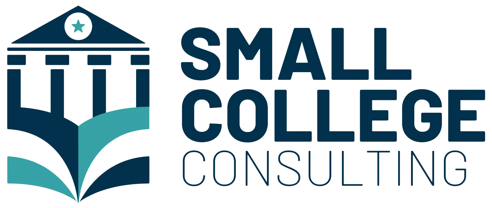
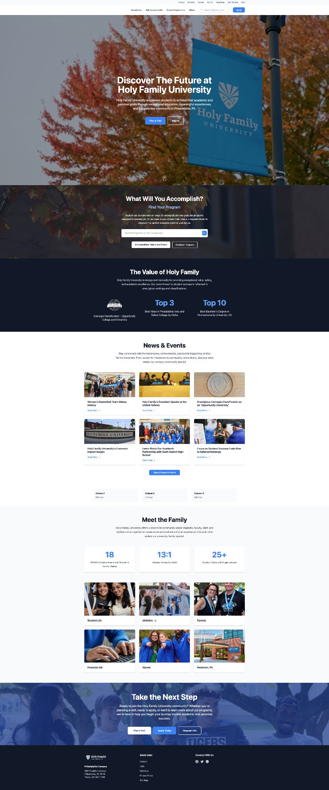
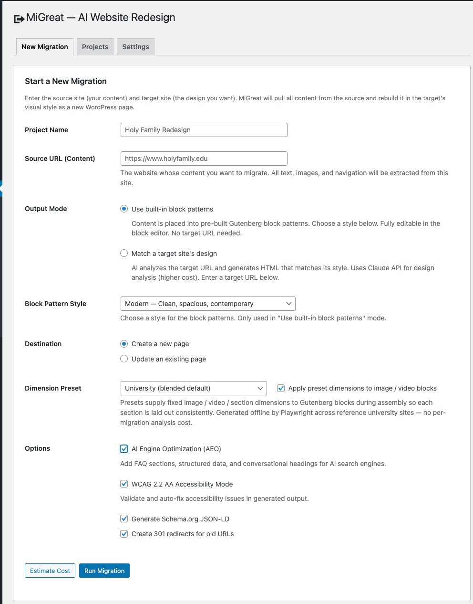
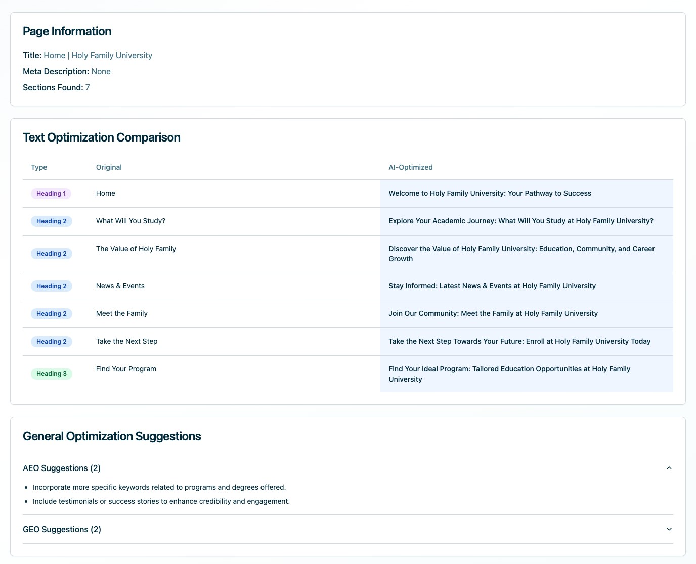
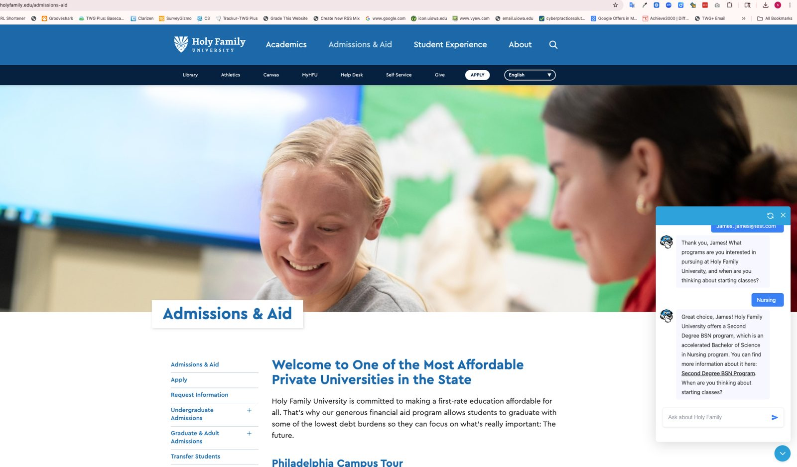

Submitted by Small College ConsultingHoly Family University Website Redesign.
A redesign proposal prepared for Holy Family University in response to the RFP issued March 23, 2026.
Modernizing Holy Family University’s web presence.
Small College Consulting is honored to present this proposal to Holy Family University. In partnership with the University’s team, we are confident that our approach will not only strengthen the institution’s website and connected marketing channels, but will also position University personnel to manage and evolve the site in the future with little to no external vendor support. Our intent is to deliver a powerful, modern website while minimizing the University’s future investment and providing a website management methodology that a small internal team can execute.
Members of the Small College Consulting team already have deep working relationships with members of the University’s leadership, and we developed the current chatbot on holyfamily.edu that is generating inquiries and informing content strategy today. We are confident that we are the right partners for this project and hope to deepen our existing relationships and expand the scope of our work together.
This proposal addresses the requirements of the RFP in full. The mapping table on page four is intentionally dense, allowing evaluators to locate the response to any individual requirement without searching.
Small College Consulting has also developed proprietary AI technology in preparation for this engagement. The technology facilitates seamless redesign and content migration from the existing Drupal installation into WordPress while simultaneously optimizing the new site for AI-engine visibility. It has been tested and fully validated against real institutional content.


URLs live on holyfamily.edu today.
Our launch target: roughly 650.
What you requested. What we heard.
The proposed project identifies various deliverables, and this response addresses each of them. The table below maps every major requirement to the specific page on which it is answered.
| What the RFP asks for | What we committed to | Page |
|---|---|---|
| Adult & Graduate enrollment priority (Sec. 4) | Variant B hero in base scope, not an add-on | p.11 |
| "Partners, not obstacles" (Sec. 7) | Shared GitHub write access day one. Dual code review. | p.20 |
| llms.txt + schema.org (Sec. 6) | Both drafted for holyfamily.edu inside this proposal | p.15 |
| WCAG 2.2 AA built in, not retrofitted (Sec. C.4) | Shift-left. Axe in CI. Manual screen reader on every template | p.23 |
| Traditional vs. headless WordPress (Sec. C.1) | Traditional. Honest tradeoff math, four reasons | p.21 |
| Slate CRM via Gravity Forms webhook (Sec. C.5) | Native forms to Slate Source Format. Ping day one | p.22 |
| Content migration (Sec. B.6 · we count 1,601) | Consolidated to ~650. 60% cut, every URL 301'd | p.19 |
| Enrollment funnel measurement (Sec. 6) | GA4 + GTM + 4-stage funnel + Looker Studio | p.17 |
| Security + FERPA + GDPR (Sec. 6) | Four pillars. Pantheon read-only. 24h CVE patch | p.24 |
| Personalization, 8 questions (Sec. 6) | Foundational in base scope, advanced as priced add-on | p.28 |
| Risk management & change control (Sec. B.9, D.3) | Five-risk register, written change orders, named categories | p.25 |
| Catholic mission (Sec. G.2 Cultural Fit) | Whole person as a design principle | p.13 |
Six artifacts, drafted inside this response.
Each of the six artifacts described below has been drafted within this document and is ready for refinement with the University's team during Discovery. Our preference is to show the work now rather than promise it for delivery later.
A first-pass IA for holyfamily.edu.
The current site comprises 1,601 URLs distributed across more than 180 distinct top-level prefixes. The first-pass recommendation presented here consolidates that inventory into eight sections and approximately 650 active pages, a reduction of roughly sixty percent. Every URL is justified by a primary audience. We anticipate that a portion of this recommendation will evolve during Discovery; the remainder reflects structural decisions we believe will hold.
- /programs/ academic programs hub~130 pgs
- /programs/undergraduate/ 30+ majors~45 pgs
- /programs/graduate/ 20+ grad programs~40 pgs
- /programs/adult-continuing/ ACE + credit for prior learning~25 pgs
- /programs/online/ online degree paths~20 pgs
- /admissions/ enrollment hub · one smart RFI form~45 pgs
- /student-life/ residential, clubs, ministry~55 pgs
- /about/ mission, leadership, history~40 pgs
- /news/ 2-year rolling window · 500+ archived~120 pgs
- /athletics/ 19 varsity programs~65 pgs
- /alumni/ giving, events, stories~45 pgs
- /directory/ faculty & staff · single source~150 pgs
Holy Family and its Philadelphia Catholic peers.
The institutions most directly competing for the attention of a prospective Holy Family student on any given visit weekend include La Salle, Villanova, and Neumann. Each of these peers has modernized its website in recent years. Holy Family has not yet done so. The accelerated timeline outlined in this response is structured to close that gap before the start of the next strategic plan cycle.


More applications. Specifically adult and graduate.
Holy Family University graduate outcomes are impressive. Ninety-three percent of recent graduates secure full-time employment within six months. Forty percent of the student body pursues programs in Nursing and Health Sciences. The Sisters of the Holy Family of Nazareth continue to shape what began as a 1954 founding into a vibrant Catholic learning community. However, that value proposition is not adequately represented on holyfamily.edu today, and the distance between the two is a principal reason prospective adult and graduate applicants leave the site without applying. Closing that distance is the central purpose of this proposal. The conservative analysis presented on page sixteen projects a $2.5M year-one return on the $145K investment.
Four tactics for adult and graduate enrollment.
Section 4 of the University's RFP identifies adult and graduate enrollment as the top growth priority. These applicants typically browse from phones in the evening between shifts and need cost and scheduling information to be visible above the fold. The four tactics described below are concrete moves this engagement will ship, not observations about the audience itself.
The first impression, drafted.
Become the person Holy Family is looking for.
A Catholic university in Philadelphia with the region's strongest nursing pipeline, over thirty undergraduate majors, and 93% employment within six months of graduation.
The same homepage, drafted for them.
Finish what you started. On your schedule.
Twenty plus graduate programs. Accelerated adult completion paths. Evening and online formats. Credit for prior learning. Time-to-degree and cost, up front.
Where we stand apart.
Founded in 1954 by the Sisters of the Holy Family of Nazareth.
Holy Family University educates the whole person for a life of integrity, service, and personal excellence. That mission statement is often cited at the front of a proposal as a preamble to a generic inclusive-design pitch. We read it instead as an instruction manual for how the site itself should be built.
Who we are building for.
The RFP names Rick Mitchell as the primary contact, but a decision of this scale necessarily involves key members of the university leadership team across departments. Drawing on the University's public leadership page, the cards below describe our understanding of who might evaluate this proposal, what each leader is likely to prioritize, and how this response is designed to address each set of concerns.
llms.txt and schema, written for you.
Roughly half of prospective students now research universities through ChatGPT, Claude, Gemini, and Perplexity on a weekly basis. Ninety-three percent of AI search sessions end without a single click through to the source institution. The content these systems surface is increasingly the first impression that a prospective family forms of the University. Section 6 of the RFP poses seven specific questions about AI content architecture. The materials below show the llms.txt file and JSON-LD EducationalOrganization payload that would ship on the first day of development, populated with real Holy Family data.
EducationalOrganization, CollegeOrUniversity, EducationalOccupationalProgram on every program page, Course, Person on every faculty profile, Event, NewsArticle, FAQPage. All JSON-LD, server-rendered, reachable without JavaScript execution as the RFP requires for agentic browsing.Copy rewritten for AI engine visibility.
Schema and llms.txt describe the site to AI engines, but the copy on every page still has to read clearly to those engines once they land. Small College Consulting’s proprietary content technology automatically rewrites headings, metadata, and body copy across the entire website for answer-engine optimization (AEO). Each page’s original copy is compared against an AI-optimized rewrite before anything ships; the University’s editors accept, reject, or refine every change.

A $145K investment, a $2.5M year-one return.
A conservative eight-percent conversion lift combined with SEO recovery produces a payback period of under three months. On these assumptions, the year-one return represents approximately fifteen to twenty times the $145K investment.
| Input | Value |
|---|---|
| Baseline enrollment 3,700 students · ~900 new/yr · ~$30K mean tuition |
$27.0M |
| Conservative conversion lift Industry benchmark: 5–15% |
+8% |
| Incremental enrollment revenue 72 additional enrollees · year 1 |
+$2.16M |
| SEO recovery at launch 301 map + schema + llms.txt |
+$350K |
| Year-one return | ~$2.5M |
| Project cost (fixed fee) | $145K |
| Year-one ROI multiple | 10.6× |
A four-stage funnel, measured end to end.
Awareness, consideration, decision, and conversion: each stage tracked, each source attributed, each lift measurable. The University's existing GA4 implementation and GTM container (GTM-5FPBQK3) will be preserved and extended so that Katherine Primus's team can read the funnel directly within Looker Studio.
Discovery is six weeks of structured listening.
- Ingest the 2025 prep work (week 1). Your content audit, governance guidelines, IA analysis, analytics baselines, and stakeholder surveys become our starting position. Zero rework. Phase 1 closes two weeks earlier than a standard Discovery cycle.
- Institutional listening (weeks 1–2). Thirty-minute one-on-ones with Dr. Prisco, Katherine Primus, Rick Mitchell, Mark Green, Edward Wright, and Eric Nelson. Each session recorded, synthesized within 48 hours, validated within 72.
- Content audit & AI-assisted classification (weeks 2–3). All 1,601 URLs classified via LLM batch into keep / rewrite / consolidate / archive / delete. Human review on every decision. Auditable worksheet delivered.
- Task-based user research (weeks 3–4). 8–10 participants across three segments (prospective undergraduate, prospective adult/graduate, current student). First-click testing on four key tasks: find a program, start an application, look up a professor, find an event.
- Information architecture validation (weeks 4–5). Card sort with 15–20 participants. Tree test on the proposed navigation. Baseline comparison against the current IA. The sitemap on page 06 is the first-pass recommendation; Discovery validates it with real users.
- Content model & sign-off (weeks 5–6). WordPress custom post types, ACF field groups, taxonomies. Drupal-to-WordPress field mapping. Gate G1 closes the phase with Rick Mitchell and Katherine Primus signing off.
1,601 URLs to approximately 650.
Viewed only at its surface, content migration appears to be a labor cost. Examined more carefully, it is a question of content strategy. A sixty-percent reduction is not a commitment to delete content; it is a commitment to identify the pages that earn their place in the new site and to protect the URL equity of those that do not. AI drafts the initial classifications, the editorial team and University staff make the final decisions, and automated tests verify that nothing breaks along the way.
| Action | URLs | Outcome |
|---|---|---|
| News articles ≥ 2 years old | ~500 | Archived to /news-archive/ with 301s preserved |
| Duplicate request-information forms | ~22 | One smart form, Slate-routed by program |
| Duplicate program landing pages | ~80 | Canonical parent + sub-track model |
| Test, seasonal, expired pages | ~40 | Deleted with 301s to nearest canonical |
| Redundant policy pages | ~30 | Consolidated under a /policies/ hub |
| Top-level URL prefixes | 180 → 8 | Eight canonical sections, every URL justified |
| Net result at launch | ~650 | 60% reduction, every URL given a validated 301 |
The University team builds with us, not receives from us.
Four phrases in the RFP all point in the same direction: partners rather than obstacles, working sessions rather than presentations, knowledge transfer throughout the project, and code review from the University's developers. Each reflects a settled preference on the part of the institution. This response addresses each with a concrete ritual rather than an adjective.
WordPress, not headless.
The University's RFP expresses a preference for WordPress and explicitly invites a rationale comparing traditional and headless approaches. For Rick Mitchell's two-person team, which will be responsible for operating this site over the next five years, the traditional approach is the stronger choice on every axis that matters: the largest talent pool, the most mature plugin ecosystem, and the lowest total cost of ownership. We would not recommend an architecture that the University's internal team could not sustainably operate.
Tools your team already knows how to run.
lang attribute and a language selector in the utility nav, positioned to meet WCAG 2.2 AA bypass requirements.WCAG 2.2 AA, shifted left.
The RFP insists that accessibility be "integrated throughout the design and development process, not retrofitted." We take that language at face value. Automated tools catch between thirty and fifty-seven percent of real WCAG failures; the remainder must be addressed manually, and that is where the majority of accessibility hours on this project will be spent.
- Design phase. Color contrast validated to 4.5:1 before mockups ship. 44×44 px touch targets in wireframes. Focus states designed as a first-class visual element for every interactive component.
- Development phase. Semantic HTML and ARIA from the first line. axe-core in the CI pipeline. Pull requests with accessibility regressions cannot merge.
- Content phase. Editor guardrails enforce alt text, heading hierarchy, link purpose. Editors cannot publish broken accessibility.
- QA phase. Manual keyboard-only testing plus screen reader testing with VoiceOver, NVDA, and JAWS on every template. Not just the homepage.
- Launch deliverable. ACR/VPAT signed at launch, not a remediation plan. Siteimprove continuous monitoring already in your stack, we configure new dashboards for WCAG 2.2 AA tracking.
OWASP. FERPA‑aware.
GDPR ready.
May to September 2026.
The target go-live date is March 1, 2027, with a four-week buffer built into Phase 5. Phase 4 deliberately schedules automated migration work across the winter break, so that activities requiring active University participation fall in January when staff return.
- G1Content model + IA approved · Rick & Katherine signJul 10, 2026
- G2Design system & component library approvedSep 4, 2026
- G3Feature-complete site on Pantheon DevNov 25, 2026
- G4Migrated content + WCAG 2.2 AA conformance reportJan 22, 2027
- G5UAT complete, training delivered, launch authorizedFeb 12, 2027
Small College Consulting. Designed for institutions that own their sites.
Small College Consulting works exclusively with institutions of Holy Family University's size and character, providing strategic, customized solutions designed for the realities of small colleges. Every architectural decision on this engagement is measured against a single question: will the University's own team be able to operate the site after the engagement concludes? The four individuals introduced below are the same four people who will be working with Rick Mitchell's team in week one and in week forty. There is no separate pitch team, and no substitution of delivery staff after contract signing.
Higher-education redesigns, delivered and operating.
Each case study below represents an engagement comparable in scale, platform, or stakeholder dynamic to Holy Family University. Every outcome cited is measurable. Live URLs and direct references will be provided to the shortlist.

- [+XX%] [Adult/grad application volume]
- [X score] [Lighthouse / WCAG conformance]
- [X hrs] [Internal team hours saved post-launch]
- [X mo] [Independent operation post-launch]
- [+XX%] [Team velocity post-training]
- [$X saved] [Retainer avoidance]
A single fixed fee.
No scope creep.
| 01 | Discovery & strategy (6 weeks) | $28,000 |
| 02 | Information architecture & content strategy | $22,000 |
| 03 | Design system & UX (8 weeks) | $38,000 |
| 04 | Development & CMS build (12 weeks) | $62,000 |
| 05 | Slate CRM integration | $12,000 |
| 06 | Content migration & QA (1,601 → ~650) | $34,000 |
| 07 | Training, launch, 90-day post-launch support | $39,000 |
Included in base scope
- Variant A + Variant B hero (persona switching built-in)
- 1,601 URLs migrated and consolidated to ~650
- Validated 301 redirect map via semantic matching
- WCAG 2.2 AA shift-left + ACR/VPAT at launch
- llms.txt + full schema.org JSON-LD pack
- Slate via Gravity Forms webhook + Ping + Query Builder
- GA4 funnel + Looker Studio dashboards
- Foundational personalization (geo, UTM, device, returning)
- Shared GitHub + dual code review + 90-day stabilization
Optional add-ons, priced separately
- AI chatbot (Gravyty): $23K – $40K Year 1
- AI search (Algolia/SearchStax): $4K – $18K Year 1
- Advanced personalization (Halda): $30K – $65K Year 1
- Content writing: $350 per page, volume discount 50+
- Monthly retainer after day 90: $3,500/mo, cancellable
Payment: 25% at contract, 25% Discovery, 25% Design, 25% Launch. Kill-switch at every gate. Pricing valid 90 days. · RFP Section 6 Personalization fully answered: foundational signals in base scope, advanced as optional add-on.
Stabilize. Optimize. Hand off.
A ninety-day stabilization window is included in the base scope. The clock begins on the day the production site goes live. After day ninety, the University's team operates the site without continuing agency involvement. Any further support is optional, month-to-month, and cancellable.
We build for ownership, not dependency.
When Dr. Prisco's next strategic plan begins in summer 2026, our intent is to deliver a website launching beside it that matches the ambition of the plan. We recommend a three-month engagement with go-live on September 1, 2026 — in time to influence the Spring and Fall 2027 incoming class. When the 90 days of post-launch support conclude, our intent is for Rick Mitchell's team to be operating this site independently. Fixed fee of $145,000, all-in. Scott Novak, Chris Coons, Eric Yerke, and James Vineburgh are available for finalist presentations.